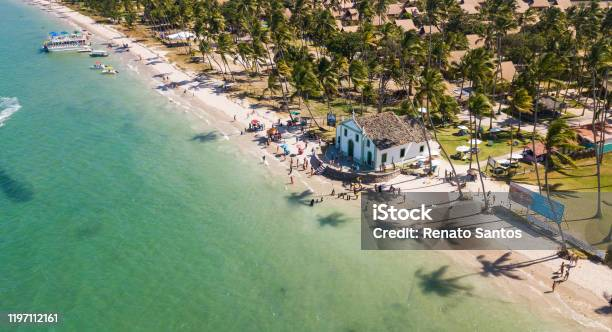
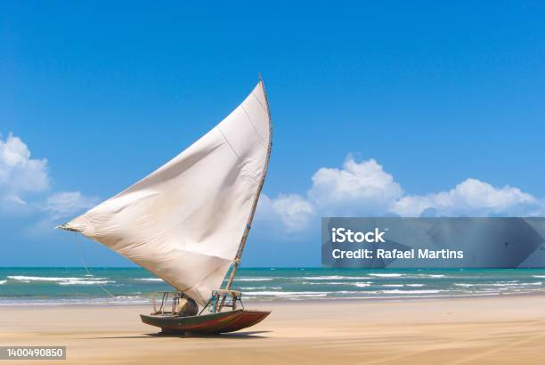

Praias mais bonitas do nordeste
Formada na foz do rio Maracaípe, essa praia é o destino certo para quem pretende passar o dia
descansando. Com
águas tranquilas, ela conta também com outras atrações como passeios de jangada pelos manguezais,
trilhas e
almoços inesquecíveis na beira do rio. E mais: você pode visitar por lá a sede do projeto Hippocampus,
que ajuda
a preservar os cavalos marinhos da região.

Mais praias
e você busca por destinos paradisíacos ideais para relaxar e tomar sol, não pode deixar de conhecer
Maragogi,
famosa por suas espetaculares piscinas naturais, porém que conta também com outras inúmeras belezas.
Para nadar nas piscinas, basta pegar um barco na vila e andar cerca de 25 minutos até os arrecifes de
corais,
que reúnem peixinhos coloridos e outros diversos animais marinhos.